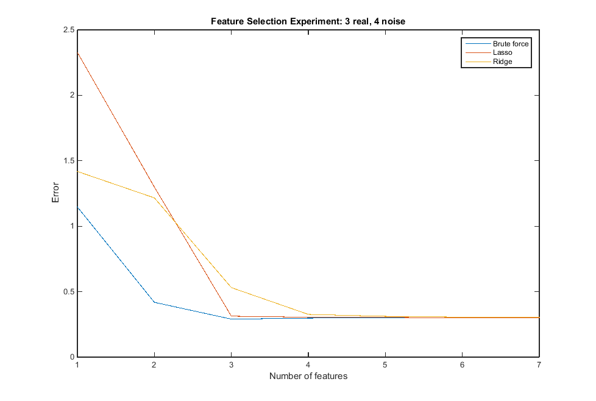
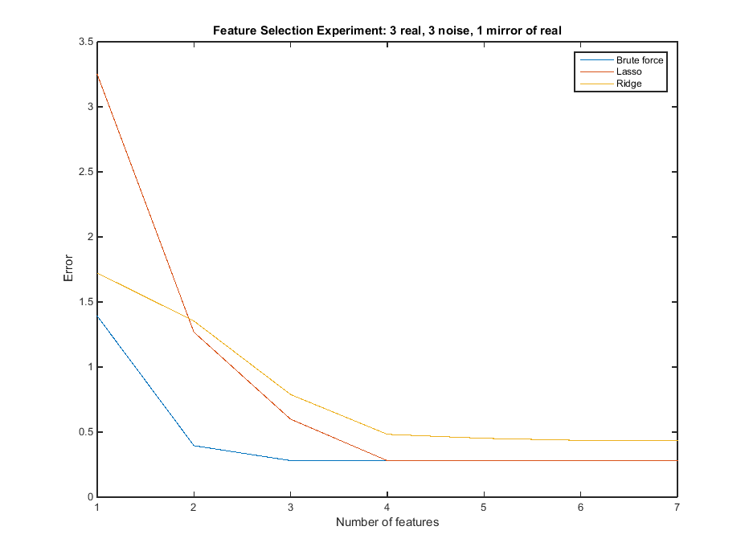
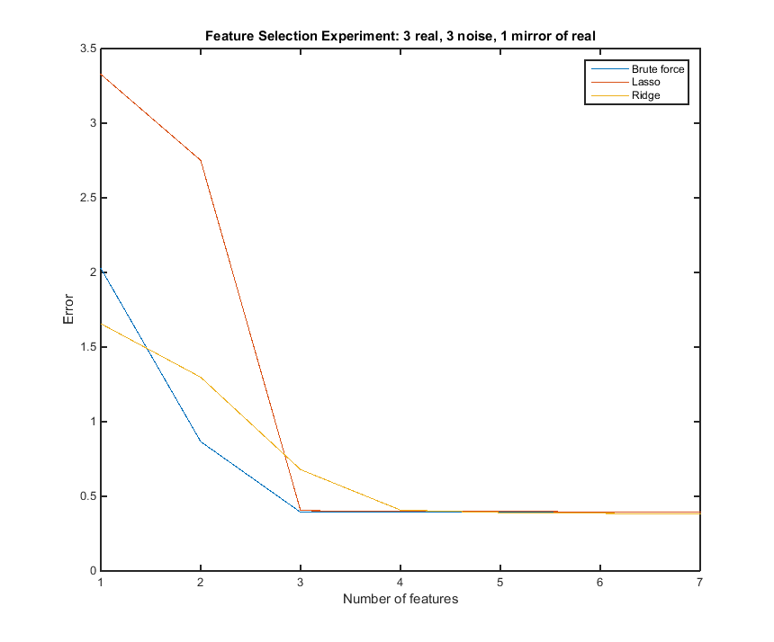
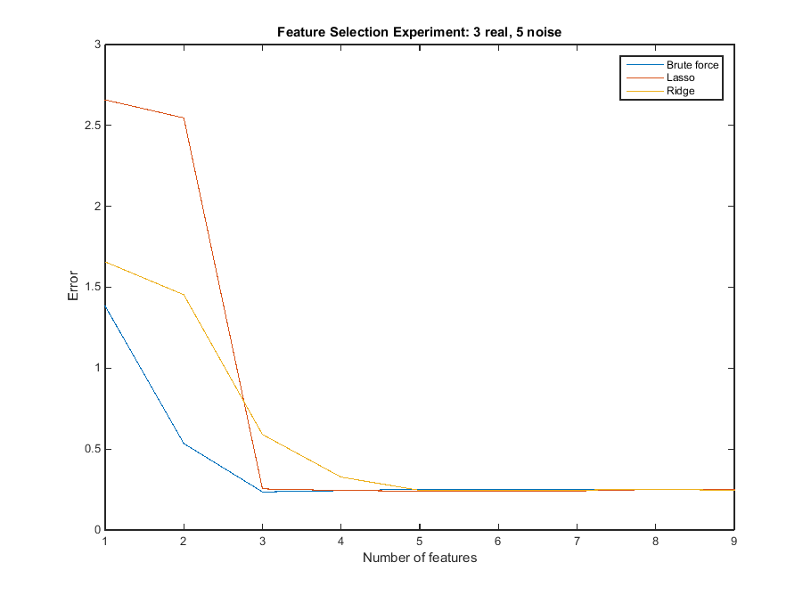
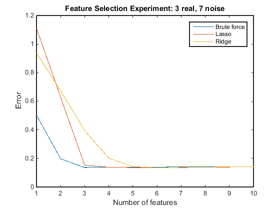
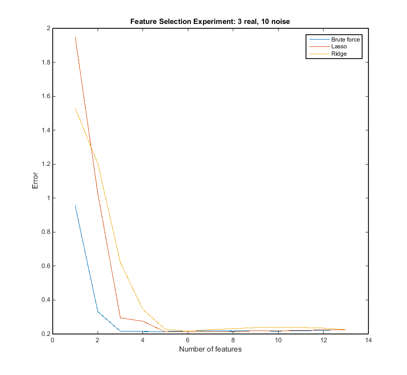
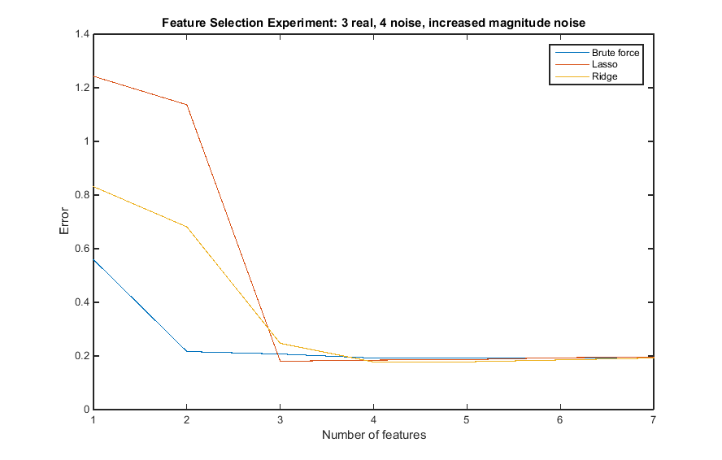

Experiment 1

Experiment 2

Experiment 3





(Raw output data and source code can be found below. I will submit a zip of the MATLAB files if an assignment is created on Sakai)
Commentary:
The steep drop-off in error after about 3 features is a strong indication that our data only has about 3 meaningful
features. The variance in the errors at the start has to do with whether or not bias terms are used. This part of the graph
isn't very meaningful for that reason. Lasso, brute force, and ridge regression all converge to the same value here as the
number of features increases.
When mirror variables are added, lasso would ignore them, while ridge would mirror them, as can be seen in the lassoBetas and
ridgeBetas below.
As the number of noise variables increased, lasso and ridge appeared to have a slightly more difficult time, but were still not very confused.
Had the dataset been less straight-forward this could be a major problem, though.
As the magnitude of the noise changed, the learning methods were not bothered.
Linreg does fine on both training and test since it is obviously not capable of overfitting truly linear data, which is exactly what
we have. The data I was using was not highly variable. (It is a linear combination of 3 features, with a small amount of randomness
added in purely so it couldn't be learned completely error-free.) In the three experiments, the training and test errors are essentially
the same. If I constructed the data set to be more variable, then there would obviously be a bigger emphasis on choosing a correct
lambda value to balance between bias/variance.
Here is some raw data from the experiments...
Experiment 1:
bruteErrors =
1.1468 (error of 1st best feature)
0.4186
0.2903
0.2980
0.2988
0.3009
0.3010 (error of all 7 features)
lassoBetas = (from 0 features to 7 features)
0 0.3527 0.7144 1.1983 1.2185 1.2227 1.2693 1.2736
0 0 0 0.5036 0.5242 0.5282 0.5683 0.5717
0 0 0.3957 0.9726 0.9912 0.9946 1.0371 1.0409
0 0 0 0 0 0 0 0.0017
0 0 0 0 0.0103 0.0123 0.0352 0.0371
0 0 0 0 0 0.0019 0.0272 0.0296
0 0 0 0 0 0 -0.0243 -0.0266
lassoErrors = (the test errors associated with 0 features through 7 features above)
2.3276
1.2991
0.3127
0.3047
0.3035
0.3004
0.3010
ridgeBetas = (from 1 feature to 8 features)
0.7797 0 0 0.1944 0.0978 0.0428 0.0134 -0.0019
0 0.6203 0.8191 0.9857 1.1055 1.1814 1.2250 1.2486
0 0 0.5381 0.5812 0.5907 0.5868 0.5811 0.5769
0 0.5752 0.7381 0.8617 0.9418 0.9884 1.0138 1.0271
0 0 0 0 0 0 0.0011 0.0014
0 0 0 0 0.0340 0.0355 0.0363 0.0367
0 0 0 0 0 0.0278 0.0286 0.0291
0 0 0 0 0 0 0 -0.0260
ridgeErrors = (the test errors associated with the features above)
1.4183
1.2165
0.5310
0.3262
0.3119
0.3060
0.3030
(These following values are just fits to the data based on lin, lasso, and ridge. Nothing to do with feature selection,
just checking error again as directed.)
linreg =
-0.0175
1.2736
0.5717
1.0408
0.0017
0.0371
0.0296
-0.0266
lassoreg =
1.2597
0.5600
1.0283
0
0.0305
0.0220
-0.0193
ridgereg =
0.0409
1.1949
0.5850
0.9748
0.0008
0.0387
0.0303
-0.0262
linregTrainError =
0.2771
lassoTrainError =
0.2775
ridgeTrainError =
0.2791
linregTestError =
0.3019
lassoTestError =
0.2996
ridgeTestError =
0.3070
__________________________________________________________________________________________________________
Experiment 2
d1m =
1.3867
d2m =
0.6034
d3m =
1.2438
bruteErrors =
1.3920
0.3956
0.2810
0.2810
0.2809
0.2810
0.2821
lassoBetas =
0 0 0.6479 0.8892 1.1947 1.1962 1.1977 1.2272
0 0 0 0.2576 0.5844 0.5859 0.5870 0.6100
0 0.0562 0.6862 0.9402 1.2619 1.2634 1.2651 1.2985
0 0 0 0 0 0.0002 0.0010 0.0176
0 0 0 0 0 0 0.0007 0.0153
0 0 0 0 0 0 0 -0.0137
0 0 0 0 -0.0000 -0.0000 -0.0001 0.0026
lassoErrors =
3.2509
1.2678
0.5989
0.2804
0.2803
0.2802
0.2821
ridgeBetas =
0.7728 0.5241 0 0.1620 0.0698 0.0179 -0.0097 -0.0240
0 0.5962 0.7844 0.9454 1.0627 1.1371 1.1799 1.2029
0 0 0.5041 0.5607 0.5889 0.6012 0.6062 0.6083
0 0 0.5501 0.6003 0.6255 0.6373 0.6428 0.6455
0 0 0 0 0 0.0151 0.0163 0.0169
0 0 0 0 0.0170 0.0163 0.0159 0.0156
0 0 0 0 0 0 -0.0136 -0.0137
0 0 0 0 0 0 0 -0.6455
ridgeErrors =
1.7228
1.3536
0.7886
0.4829
0.4521
0.4363
0.4353
linreg =
-0.0386
1.2272
0.6100
0.6480
0.0176
0.0153
-0.0137
-0.6480
lassoreg =
1.2124
0.5985
1.2806
0.0093
0.0080
-0.0066
-0.0000
ridgereg =
0.0221
1.1272
0.5966
0.6387
0.0166
0.0180
-0.0145
-0.6387
linregTrainError =
0.2645
lassoTrainError =
0.2652
ridgeTrainError =
0.2664
linregTestError =
0.2796
lassoTestError =
0.2802
ridgeTestError =
0.2833
________________________________________________________________________________________
Experiment 3
d1m =
1.2278
d2m =
1.3354
d3m =
1.0809
bruteErrors =
2.0281
0.8666
0.3934
0.3959
0.3959
0.3933
0.3922
lassoBetas =
0 0.1780 0.3391 1.0803 1.0880 1.0915 1.1054 1.1170
0 0 0.1830 1.0952 1.1062 1.1110 1.1307 1.1472
0 0 0 1.0000 1.0102 1.0144 1.0283 1.0397
0 0 0 0 -0.0047 -0.0067 -0.0152 -0.0223
0 0 0 0 0 -0.0023 -0.0126 -0.0212
0 0 0 0 0 0 -0.0087 -0.0163
0 0 0 0 0 0 0 0.0000
lassoErrors =
3.3276
2.7511
0.4040
0.4014
0.4003
0.3954
0.3922
ridgeBetas =
0.9365 0.6898 0 0.2913 0.1832 0.1217 0.0888 0.0717
0 0 0.7790 0.9149 1.0044 1.0571 1.0860 1.1012
0 0.6457 0.8273 0.9622 1.0471 1.0951 1.1206 1.1338
0 0 0.7696 0.8873 0.9589 0.9982 1.0187 1.0291
0 0 0 0 0 0 0 -0.0221
0 0 0 0 0 0 -0.0197 -0.0204
0 0 0 0 0 -0.0089 -0.0086 -0.0084
0 0 0 0 0.0096 0.0089 0.0086 0.0084
ridgeErrors =
1.6568
1.2980
0.6791
0.4080
0.3912
0.3858
0.3832
linreg =
0.0542
1.1170
1.1472
1.0397
-0.0223
-0.0212
-0.0081
0.0081
lassoreg =
1.1054
1.1307
1.0283
-0.0152
-0.0126
-0.0087
0
ridgereg =
0.1185
1.0852
1.0853
0.9839
-0.0227
-0.0196
-0.0091
0.0091
linregTrainError =
0.3946
lassoTrainError =
0.3989
ridgeTrainError =
0.3967
linregTestError =
0.3848
lassoTestError =
0.3954
ridgeTestError =
0.3859
function [] = homework3()
%COMP 790-134 Spring 2015
%@author David Steiner
%Experimenting with feature selection
%Constants
m = 300; %There are 2m total data points, split only for ease of changing to a classification problem
p = 7; %Number of features total
q = 4; %Number of meaningful features
muPos = .7;
sigPos = .3;
muNeg = .2;
sigNeg = .3;
%Experiment 1: Construct a data set with 3 meaningful features and 4
%meaningless features (noise)
data = generate_noisy_data(muPos, sigPos, muNeg, sigNeg, m, p, q);
%data = generate_real_mirror(muPos, sigPos, muNeg, sigNeg, m, p, q);
%data = generate_fake_mirror(muPos, sigPos, muNeg, sigNeg, m, p, q);
%Split traning set into traning (60%), validation (20%), and test (20%)
trainEnd = round(2*m*.6);
validationEnd = round(2*m*.8);
testEnd = size(data, 1);
training = data(1:trainEnd, :);
validation = data(trainEnd+1:validationEnd, :);
test = data(validationEnd+1: testEnd, :);
cols = size(training, 2);
trainingData = training(:, 1:cols-1);
trainLabels = training(:, cols);
testData = test(:, 1:cols-1);
testLabels = test(:, cols);
%Calculate the errors associated with choosing best 1-7 features exhaustively
bruteErrors = brute_force_features(trainingData, trainLabels, testData, testLabels, p);
bruteErrors
%Calculate the errors associated with choosing 0-7 features using lasso
lassoBetas = lasso_by_features(trainingData, trainLabels)
predictions = (testData * lassoBetas);
lassoErrors = zeros(cols, 1);
for i=1:cols
lassoErrors(i) = mean_squared_error(predictions(:, i), testLabels);
end
lassoErrors = lassoErrors(2:p+1) %Only care about features 1-7
%Calcualate the errors associated with 0-7 features using ridge reg
ridgeBetas = ridge_by_features(trainingData, trainLabels)
testDataBias = [ones(size(testData,1),1) testData];
predictions = (testDataBias * ridgeBetas);
ridgeErrors = zeros(cols, 1);
for i=1:cols
ridgeErrors(i) = mean_squared_error(predictions(:, i), testLabels);
end
ridgeErrors = ridgeErrors(1:p) %Only care about features 1-7
plot([bruteErrors lassoErrors ridgeErrors])
%title('Feature Selection Experiment: 3 real, 4 noise')
title('Feature Selection Experiment: 3 real, 4 noise, increased magnitude noise');
xlabel('Number of features')
ylabel('Error')
legend('Brute force', 'Lasso', 'Ridge')
%Also, just fit the data with linreg, ridge reg, and lasso reg.
%Report results on both training and test
print_comparison(trainingData, trainLabels, testData, testLabels, p);
end
function [ data ] = generate_noisy_data(muPos, sigPos, muNeg, sigNeg, m, p, q)
%Experiment 1: Construct a data set with 3 meaningful features and 4
%meaningless features (noise)
noiseMean = (muPos+muNeg)/2;
sigNoise = sigPos+sigNeg+muPos;
d1m = .5+rand(); %Multiplier for feature 1
d2m = .5+rand();
d3m = .5+rand();
randomness = normrnd(.90, .3, 2*m, 1);
%Randomness exists so the algorithm can't learn the features perfectly
%X1, X2, X3 are meaningul, X4, X5, X6, and X7 are not
positiveX1X2X3 = normrnd(muPos, sigPos, m, q); %Positive examples
positiveNoise = normrnd(noiseMean, sigNoise, m, p-q);
negativeX1X2X3 = normrnd(muNeg, sigNeg, m, q); %Negative examples
negativeNoise = normrnd(noiseMean, sigNoise, m, p-q);
data = [positiveX1X2X3 positiveNoise; negativeX1X2X3 negativeNoise];
linComb = d1m*data(:,1)+d2m*data(:,2)+d3m*data(:,3);
data = [data randomness.*linComb];
%data = [positiveX1X2X3 positiveNoise ones(m, 1); negativeX1X2X3 negativeNoise zeros(m,1)];
data = data(randperm(size(data,1)),:); %Randomly shuffle the order of our training examples
data;
end
function [ testErrors ] = brute_force_features(train, trainLabels, test, testLabels, p)
%Return the errors of the best features, selected by brute force
beta = lasso(train, trainLabels, 'Alpha', 0.000001,'Lambda', [0]);
trainErrors = 100000*ones(p, 1);
testErrors = ones(p, 1);
for i=1:p
%B = nchoosek(beta, i)
B = nchoosek([1 2 3 4 5 6 7], i);
for j=1:size(B, 1)
prediction = train(:, B(j, :))*beta(B(j, :));
train_error = mean_squared_error(prediction, trainLabels);
if(train_error= i-1)
x = x - .001;
end
if(sum(lasso(trainingData, labels, 'Lambda', x)==0) < i-1)
x = x + .001;
end
end
lassoBetas(:, i) = lasso(trainingData, labels, 'Lambda', x);
end
lassoBetas = fliplr(lassoBetas);
end
function [ ridgeBetas ] = ridge_by_features(trainingData, labels)
%Returns a matrix of ridge betas, one column for each number of features
cols = size(trainingData, 2);
ridgeBetas = zeros(cols+1, cols+1);
lambda = 1024; %Arbitrarily high reg term to try to shrink noise params
for i=1:cols+1
A = ridge(labels, trainingData, lambda, 0);
temp = flipud(sort(A));
A(A